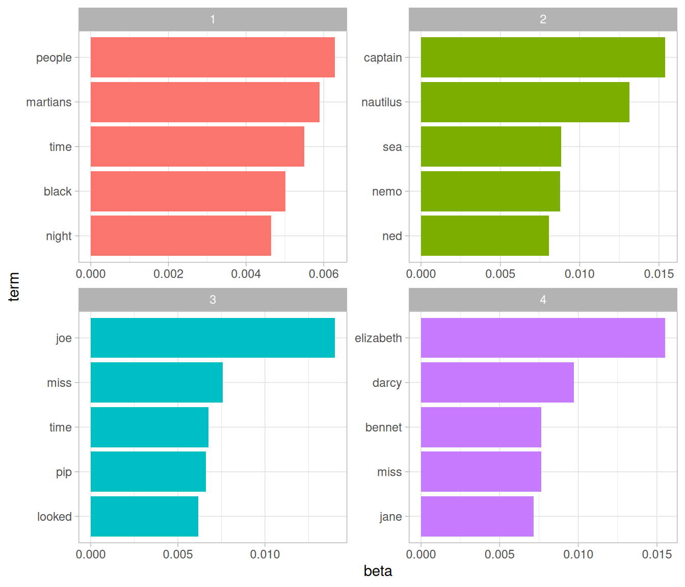
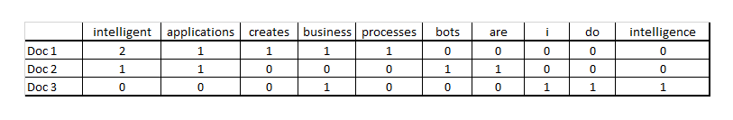
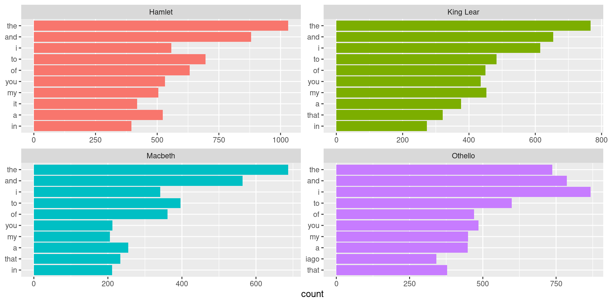

[1] "Elena works at the MTA in New York, trying to speed up trains. Last week she met | with Robert, the a data scientist at Mckinsey working out of Washington DC"Meetup 11: Text Mining and Natural Language Processing
George I. Hagstrom
2025-11-03
Week Schedule and HW Feedback
- Webscraping confusing and inconsistent across platforms
read_htmlvsread_html_live- On some machines,
open scretsrendered a static pages - Lab on text mining due this Sunday
- Expect one coding vignette tomorrow some time
- Reading a different book Text Mining with R: A Tidy Approach Chapters 1-4
Setup a meeting if you are behind
- My feeling is that a lot of people are a little bit behind
- If you are very behind, send me a message and we can chat about how to get caught back up
- It is important to be close to finished by the end of the semester
What is Text Mining?
Text mining is the process of extracting quantitative insights from unstructured textual data.
- Sentiment Analysis
- Map text into discrete or continuous emotional categories
- -1 to 1
- Positive, Negative, Neutral
What is Text Mining?
- Text Classification
- Select several not-necessarily emotional characteristics
- Score text according to similarity with topics
politics,pop-culture,science,sports,business,leisure, etc
What is Text Mining?
Topic Modeling
Discover the subjects described in a group of documents
Unsupervised dimensionality reduction technique 
What is Text Mining?
- Named Entity Recognition
What is Text Mining?
- Named Entity Recognition
| name | type |
|---|---|
| Elena | person |
| MTA | organization |
| train operations | role |
| New York | location |
| Robert | person |
| data scientist | role |
| Mckinsey | organization |
| Washington DC | location |
Tidy Text Format
Text is stored in a Tidy format if it is divided into tokens and it is stored in a table with one token per row.
- tokens could be words, sentences, segments of text of fixed length, etc
[1] "Because I could not stop for Death -"
[2] "He kindly stopped for me -"
[3] "The Carriage held but just Ourselves -"
[4] "and Immortality" Tidy Text Format
Text is stored in a Tidy format if it is divided into tokens and it is stored in a table with one token per row.
- tokens could be words, sentences, segments of text of fixed length, etc
# A tibble: 20 × 2
line word
<int> <chr>
1 1 because
2 1 i
3 1 could
4 1 not
5 1 stop
6 1 for
7 1 death
8 2 he
9 2 kindly
10 2 stopped
11 2 for
12 2 me
13 3 the
14 3 carriage
15 3 held
16 3 but
17 3 just
18 3 ourselves
19 4 and
20 4 immortalityTidy Text Format
Text is stored in a Tidy format if it is divided into tokens and it is stored in a table with one token per row.
- tokens could be words, sentences, segments of text of fixed length, etc
# A tibble: 4 × 1
line
<chr>
1 because i could not stop for death -
2 he kindly stopped for me -
3 the carriage held but just ourselves -
4 and immortality Alternative Text Storage Formats
- string long string of characters, R character data type
- corpus structured collection of text, like a database, i.e. collection of novels, all the SEC filings from companies, legal opinions or technical manuals. Text plus metadata
- Document-term matrix Alternate description of corpus- rows are corpus elements, columns are tokens, values describe frequency

How to Tokenize
tidytextR package has functions for tokenization
How to Tokenize
tokencan bewords,sentences,lines,paragraphs,regex,ngrams, various others
# A tibble: 13,030 × 1
text
<chr>
1 "PRIDE AND PREJUDICE"
2 ""
3 "By Jane Austen"
4 ""
5 ""
6 ""
7 "Chapter 1"
8 ""
9 ""
10 "It is a truth universally acknowledged, that a single man in possession"
# ℹ 13,020 more rowsHow to Tokenize
tokencan bewords,sentences,lines,paragraphs,regex,ngrams, various others
How to Tokenize
tokencan bewords,sentences,lines,paragraphs,regex,ngrams, various others
austen_books() |> filter(book == "Pride & Prejudice") |> select(text) |>
unnest_tokens(sentence,text,token="sentences")# A tibble: 15,545 × 1
sentence
<chr>
1 "pride and prejudice"
2 "by jane austen"
3 "chapter 1"
4 "it is a truth universally acknowledged, that a single man in possession"
5 "of a good fortune, must be in want of a wife."
6 "however little known the feelings or views of such a man may be on his"
7 "first entering a neighbourhood, this truth is so well fixed in the minds"
8 "of the surrounding families, that he is considered the rightful property"
9 "of some one or other of their daughters."
10 "\"my dear mr."
# ℹ 15,535 more rowsTidy Text Workflow

TTwR 1.1
Stop Words
stop wordsare words that commonly occur in the text you are studying but which contain little to no meaningful information about your data analysis taskthe,of,to,a,an,for- Typically remove from data as part of cleaning
Stop Words
stop wordsare words that commonly occur in the text you are studying but which contain little to no meaningful information about your data analysis taskthe,of,to,a,an,for- Typically remove from data as part of cleaning
# A tibble: 7 × 2
line word
<int> <chr>
1 1 stop
2 1 death
3 2 kindly
4 2 stopped
5 3 carriage
6 3 held
7 4 immortalityWhere did stop_words come from?
- A
lexiconis the collection of terms that appear in a corpus stop_wordscombines three lexicons composed of different collections ofstop words:- You can modify these lexicons to support your particular needs
Other Ways to Tidy
- Stemming/Lematization
run,runner,running,runners,runs- Replace with
run - Use
regex - Convert text to data:
Other Ways to Tidy
- Stemming/Lematization
run,runner,running,runners,runs- Replace with
runusingregex
- Convert text to data:
Other Ways to Tidy
- Stemming/Lematization
run,runner,running,runners,runs- Replace with
runusingregex
- Convert text to data:
Other Ways to Tidy
- Stemming/Lematization
run,runner,running,runners,runs- Replace with
runusingregex
# A tibble: 73,422 × 4
text book linenumber chapter
<chr> <fct> <int> <int>
1 "SENSE AND SENSIBILITY" Sense & Sensibility 1 0
2 "" Sense & Sensibility 2 0
3 "by Jane Austen" Sense & Sensibility 3 0
4 "" Sense & Sensibility 4 0
5 "(1811)" Sense & Sensibility 5 0
6 "" Sense & Sensibility 6 0
7 "" Sense & Sensibility 7 0
8 "" Sense & Sensibility 8 0
9 "" Sense & Sensibility 9 0
10 "CHAPTER 1" Sense & Sensibility 10 1
# ℹ 73,412 more rowsSentiment Analysis
- Sentiment analysis calculates the emotional content of segments of text
- Sentiment lexicon: group of words with defined emotional meaning
- Aggregate sentiment lexicon over a group of words
TTWR Fig 2.1
Types of Lexicons
- There are many different sentiment lexicons:
afinnranks words from -5 to 5:
# A tibble: 2,477 × 2
word value
<chr> <dbl>
1 abandon -2
2 abandoned -2
3 abandons -2
4 abducted -2
5 abduction -2
6 abductions -2
7 abhor -3
8 abhorred -3
9 abhorrent -3
10 abhors -3
# ℹ 2,467 more rowsTypes of Lexicons
- There are many different sentiment lexicons:
afinnranks words from -5 to 5:
Types of Lexicons
- There are many different sentiment lexicons:
bingsplits words into positive or negative
Types of Lexicons
- There are many different sentiment lexicons:
nrcgroups words into 10 broad categories
Types of Lexicons
- There are many different sentiment lexicons:
nrcgroups words into 10 broad categories
Example: A Modest Proposal
modest_proposal = gutenberg_download(1080) |> unnest_tokens(word,text) |> anti_join(stop_words)
modest_proposal |>
inner_join(get_sentiments("afinn")) # A tibble: 142 × 3
gutenberg_id word value
<int> <chr> <dbl>
1 1080 preventing -1
2 1080 poor -2
3 1080 burden -2
4 1080 swift 2
5 1080 melancholy -2
6 1080 honest 2
7 1080 forced -1
8 1080 helpless -2
9 1080 leave -1
10 1080 dear 2
# ℹ 132 more rowsA Modest Proposal
Compute Sentiment over larger chunks of text
- Can group words into clusters
shakespeare = gutenberg_download(c("2266","2265","2264","2267"),meta_fields = "title") |>
unnest_tokens(word,text) |> mutate(linenumber = row_number())
shakespeare_sentiment = shakespeare |> inner_join(get_sentiments("bing")) |>
count(title, index = linenumber %/% 400, sentiment) %>%
pivot_wider(names_from = sentiment, values_from = n, values_fill = 0) %>%
mutate(sentiment = positive - negative)
shakespeare_sentiment |> head(6)# A tibble: 6 × 5
title index negative positive sentiment
<chr> <dbl> <int> <int> <int>
1 Hamlet 63 9 1 -8
2 Hamlet 64 5 8 3
3 Hamlet 65 13 13 0
4 Hamlet 66 14 10 -4
5 Hamlet 67 14 13 -1
6 Hamlet 68 9 8 -1Compute Sentiment over chunks
- Can group words into clusters

Analyzing Word Frequency
Can we determine what a document is about by looking at the words?
Take a look at Shakespeare
shakespeare <- gutenberg_download(c("2266","2265","2264","2267"),meta_fields = "title")
shakespeare |> unnest_tokens(word,text) |> count(title,word,sort=TRUE)# A tibble: 17,111 × 3
title word n
<chr> <chr> <int>
1 Hamlet the 1031
2 Hamlet and 881
3 Othello i 868
4 Othello and 787
5 King Lear the 767
6 Othello the 737
7 Hamlet to 696
8 Macbeth the 687
9 King Lear and 654
10 Hamlet of 632
# ℹ 17,101 more rowsAnalyzing Word Frequency
Can we determine what a document is about by looking at words?
library(forcats)
shakespeare |> unnest_tokens(word,text) |> group_by(title) |>
count(word,sort=TRUE) |>
slice_max(n,n=10) |> ungroup() |>
mutate(word = reorder(word,n)) |>
ggplot(aes(n,fct_reorder(word, n),fill = title)) +
geom_col(show.legend = FALSE) +
labs(x = "count", y = NULL) +
facet_wrap(~title, ncol = 2, scales = "free")Analyzing Word Frequency
Can we determine what a document is about by looking at words?
Normalizing Frequency
- Very common words dominate the ranking
- If a word is common relative to how much it normally occurs, that might be more informative
- Definition:
tf-idfstands for term frequency-inverse document frequency - Weight counts of a word in a document relative to the occurrence of that word across all documents.
\[ \mathrm{tf}\cdot\mathrm{idf}(term,doc) = \frac{n_{term\_in\_doc}}{n_{words\_in\_doc}} \log(\frac{n_{docs}}{n_{docs\_with\_term}}) \]
Calculating tf-idf
bind_tf_idfcalculatestf-idfgiven text and a grouping that defines corpus documents
# A tibble: 17,111 × 6
title word n tf idf tf_idf
<chr> <chr> <int> <dbl> <dbl> <dbl>
1 Hamlet the 1031 0.0340 0 0
2 Hamlet and 881 0.0291 0 0
3 Othello i 868 0.0309 0 0
4 Othello and 787 0.0280 0 0
5 King Lear the 767 0.0302 0 0
6 Othello the 737 0.0262 0 0
7 Hamlet to 696 0.0230 0 0
8 Macbeth the 687 0.0372 0 0
9 King Lear and 654 0.0258 0 0
10 Hamlet of 632 0.0208 0 0
# ℹ 17,101 more rowsCalculating tf-idf
bind_tf_idfcalculatestf-idfgiven text and a grouping that defines corpus documents
shakespeare |> unnest_tokens(word,text) |>
count(title,word,sort=TRUE) |>
bind_tf_idf(word,title,n) |>
group_by(title) |>
slice_max(tf_idf, n = 10) |>
ungroup() |>
ggplot(aes(tf_idf, fct_reorder(word, tf_idf), fill = title)) +
geom_col(show.legend = FALSE) +
facet_wrap(~title, ncol = 2, scales = "free") +
labs(x = "tf-idf", y = NULL)Calculating tf-idf
bind_tf_idfcalculatestf-idfgiven text and a grouping that defines corpus documents
Alternative Tokenization n-grams
n-gramsare combinations ofnwords- Can tokenize using
unnest_tokens:
austen_bigrams <- austen_books() %>%
unnest_tokens(bigram, text, token = "ngrams", n = 2) %>%
filter(!is.na(bigram))
austen_bigrams# A tibble: 662,783 × 2
book bigram
<fct> <chr>
1 Sense & Sensibility sense and
2 Sense & Sensibility and sensibility
3 Sense & Sensibility by jane
4 Sense & Sensibility jane austen
5 Sense & Sensibility chapter 1
6 Sense & Sensibility the family
7 Sense & Sensibility family of
8 Sense & Sensibility of dashwood
9 Sense & Sensibility dashwood had
10 Sense & Sensibility had long
# ℹ 662,773 more rowsn-grams
- The presence of one word can change the meaning of another
- “The food was great” vs “The food was not great”
- Combinations of words can be distinct units:
- “Spring Street”, “Chief Executive Officer”
Filter n-grams?
- Look at the common
bi-grams
# A tibble: 193,209 × 2
bigram n
<chr> <int>
1 of the 2853
2 to be 2670
3 in the 2221
4 it was 1691
5 i am 1485
6 she had 1405
7 of her 1363
8 to the 1315
9 she was 1309
10 had been 1206
# ℹ 193,199 more rows- How do we remove the bi-grams with stop words?
Separate
- Can use
separateto split the bi-gram into two
# A tibble: 187,965 × 3
word1 word2 n
<chr> <chr> <int>
1 of the 2853
2 to be 2671
3 in the 2221
4 it was 1694
5 i am 1488
6 she had 1409
7 of her 1371
8 to the 1316
9 she was 1310
10 had been 1206
# ℹ 187,955 more rowsThen Filter
- Then can use filter to remove the stop words
austen_bigrams |> separate(bigram,c("word1","word2")) |>
count(word1,word2, sort = TRUE) |>
anti_join(stop_words,by = join_by("word1" == "word")) |>
anti_join(stop_words, by = join_by("word2" == "word"))# A tibble: 26,022 × 3
word1 word2 n
<chr> <chr> <int>
1 sir thomas 300
2 miss crawford 240
3 captain wentworth 167
4 miss woodhouse 152
5 lady russell 136
6 frank churchill 131
7 sir walter 123
8 colonel brandon 116
9 lady bertram 116
10 miss fairfax 111
# ℹ 26,012 more rowsAnd finally unite
- Put the two words back together
austen_bigrams |> separate(bigram,c("word1","word2")) |>
count(word1,word2, sort = TRUE) |>
anti_join(stop_words,by = join_by("word1" == "word")) |>
anti_join(stop_words, by = join_by("word2" == "word")) |>
unite(bigram,word1,word2,sep=" ")# A tibble: 26,022 × 2
bigram n
<chr> <int>
1 sir thomas 300
2 miss crawford 240
3 captain wentworth 167
4 miss woodhouse 152
5 lady russell 136
6 frank churchill 131
7 sir walter 123
8 colonel brandon 116
9 lady bertram 116
10 miss fairfax 111
# ℹ 26,012 more rowsMeetup Reflection/One Minute Paper
Please fill out the following google form after the meeting or watching the video: